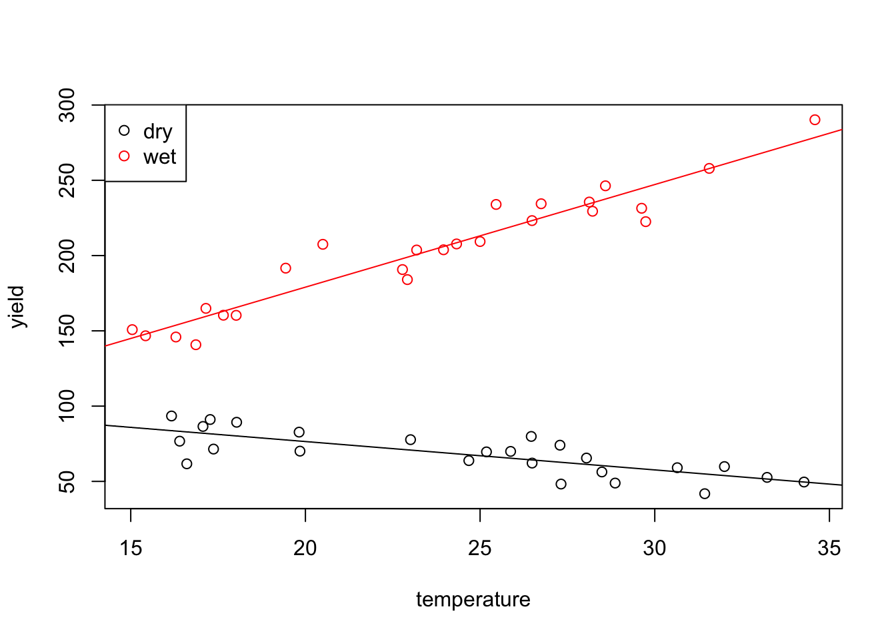

Section 14 Factors
In this section we will learn how to fit linear models when some or all of the inputs are categorical. Such inputs are sometimes called “factors”. These can be binary (e.g. sex recorded as male/female) or ordered (e.g. quality recorded as poor/medium/good) or unordered (e.g. marital status recorded as single/married/divorced/widowed).
14.1 Indicator Variables
Our aim here is to include categorical input variables within the usual regression model \[\begin{equation*} y = X\beta + \varepsilon. \end{equation*}\]
Assume that \(x_j \in \{a_1, \ldots, a_k\}\) is a factor which has \(k\) possible values. The possible values of the factor, \(a_1, \ldots, a_k\) are also called the levels of the factor. The easiest way to include a factor in a regression model is via indicator variables. For this we represent \(x_j\) using \(k-1\) columns in the design matrix, say \(\tilde x_1, \ldots, \tilde x_{k-1}\), where \[\begin{equation*} \tilde x_{\ell i} = \begin{cases} 1 & \mbox{if $x_{ji} = a_\ell$ and} \\ 0 & \mbox{otherwise,} \end{cases} \end{equation*}\] for all \(\ell \in \{1, \ldots, k-1\}\) and \(i \in \{1, \ldots, n\}\). Using this convention, \(x_{ji} = a_k\) is represented by setting \(\tilde x_{1,i} = \cdots = \tilde x_{k-1,i} = 0\). The value \(a_k\) which is not represented as a separate column is called the reference level. The regression coefficients corresponding to the columns \(\tilde x_1, \ldots, \tilde x_{k-1}\) can be interpreted as the effect of level \(a_\ell\), relative to the effect of level \(a_k\). Since the indicator is constant \(1\) for all samples corresponding to a given factor, regression coefficients representing factors lead to changes of the intercept, rather than of slopes. This interpretation assumes the model includes an intercept term; without an intercept, factor coefficients would represent absolute levels rather than relative shifts.
We are using only \(k-1\) columns to represent a factor with \(k\) levels. The reason is that using all \(k\) columns would create a logical redundancy: if an observation doesn’t belong to any of the first \(k-1\) levels, we already know it must belong to level \(a_k\). Mathematically, if we would use \(k\) columns, defined as above, we would get \[\begin{equation*} \sum_{\ell=1}^k \tilde x_{\ell i} = \mathbf{1}, \end{equation*}\] and in a model with an intercept, this redundancy makes the matrix \(X^\top X\) non-invertible (see section 15 for the general theory).
Example 14.1 Consider a dataset consisting of a numerical input variable
and a binary factor for gender (female, male).
Assume we are given data
\((1, \mathrm{male})\), \((2, \mathrm{female})\), \((3, \mathrm{female})\).
Then we can encode this data using the following design matrix:
| intercept | \(x_1\) | \(1_\mathrm{\{female\}}(x_2)\) |
|---|---|---|
| 1 | 1 | 0 |
| 1 | 2 | 1 |
| 1 | 3 | 1 |
In R there is a dedicated type factor for categorical variables.
If factors appear in the input of linear regression problem, the
function lm() will automatically create the indicator variables
for us.
Example 14.2 Here we simulated data which could describe the effect of some medical treatment. In the simulated data we have two groups, one which has been “treated” and a control group. There is a “value” which decreases with age, and is lower for the group which has been treated (the intercept is 10 instead of 12).
age1 <- runif(25, 18, 40)
group1 <- data.frame(
value=10 - 0.2 * age1 + rnorm(25, sd=0.5),
age=age1,
treated="yes")
age2 <- runif(25, 18, 80)
group2 <- data.frame(
value=12 - 0.2 * age2 + rnorm(25, sd=0.5),
age=age2,
treated="no")
data <- rbind(group1, group2)
data$treated <- factor(data$treated, levels = c("no", "yes"))The last line of the code tells R explicitly that the treated column
represents a factor with levels “no” and “yes”. Internally, this column will
now be represented by numbers 1 (for “no”) and 2 (for “yes”), but this numeric representation
is mostly hidden from the user. Now we fit a regression model:
Call:
lm(formula = value ~ ., data = data)
Residuals:
Min 1Q Median 3Q Max
-1.76041 -0.22188 0.04535 0.23802 1.29250
Coefficients:
Estimate Std. Error t value Pr(>|t|)
(Intercept) 11.525306 0.282369 40.82 < 2e-16 ***
age -0.189367 0.005557 -34.08 < 2e-16 ***
treatedyes -1.845246 0.180890 -10.20 1.68e-13 ***
---
Signif. codes: 0 '***' 0.001 '**' 0.01 '*' 0.05 '.' 0.1 ' ' 1
Residual standard error: 0.5452 on 47 degrees of freedom
Multiple R-squared: 0.9635, Adjusted R-squared: 0.962
F-statistic: 620.5 on 2 and 47 DF, p-value: < 2.2e-16We see that R used “no” as the reference level, here. The
regression coefficient treatedyes gives the relative change
of the “yes”, compared to “no”. The true value is
the difference of the means: \(10 - 12 = -2\), and the estimated
value -1.89 is reasonably close to this. The fitted values
for this model are
\[\begin{equation*}
\hat y
= \begin{cases}
\beta_0 + \beta_1 x_1 & \mbox{if not treated, and} \\
(\beta_0 + \beta_2) + \beta_1 x_1 & \mbox{if treated}.
\end{cases}
\end{equation*}\]
To get a better idea of the model fit, we plot the data together with separate regression lines for “yes” (red) and “no” (black):
par(mfrow = c(1, 2))
plot(value ~ age, data = data,
col = ifelse(treated == "yes", "red", "black"))
# regression line for the reference level `treatment == "no"`
abline(a = coef(m)[1], b = coef(m)[2])
# regression line for the level `treatment = "yes"`:
# here we need to add the coefficient for `treatedyes`
# to the intercept
abline(a = coef(m)[1] + coef(m)[3], b = coef(m)[2], col="red")
legend("bottomleft", c("no", "yes"),
col = c("black", "red"), lwd = 2)
# also show a boxplot for comparison
boxplot(value ~ treated, data = data,
border = c("black", "red"))
We can see that the two regression lines, corresponding to the two levels are parallel. They have the same slope but different intercepts.
The last command shows a boxplot of value for comparison.
The boxplot does not allow to conclude that the treatment had an effect,
whereas the linear model, which accounts for age, shows the effect
of the treatment as a difference in intercepts. The ***
in the treatedyes row of the summary(m) output shows that the
difference in intercepts is statistically significant.
14.2 Interactions
In some situations, the strength of the dependency of the response \(y\) to an input \(x_1\) might depend on another input, say \(x_2\). The simplest such situation would be, if the coefficient \(\beta_1\), corresponding to \(x_1\) is itself proportional to \(x_2\), say \(\beta_1 = \gamma x_2\). In this case we have \(y = \cdots + \beta_1 x_1 = \cdots + \gamma x_1 x_2\). Traditionally, inputs added to a model which are the product of two or more of the original inputs are called interactions. As a general rule, an interaction is only included if the “main effects” are also included in the model, so in any variable selection procedure, we would not drop \(x_1\) or \(x_2\) if \(x_1 x_2\) is still in the model. An exception to this is when one can directly interpret the interaction term without the main effect.
In R, interactions (i.e. products of inputs) are represented by the
symbol : and * can be used to include two variables together with their
product. Note also, that if a variable is known to be a factor, and it is
included as an interaction term, then R will make sure to only remove the
interaction term in a backward variable selection procedure whilst the main
effects are also included.
Example 14.3 Consider the following toy dataset:
In lm() and related functions we can write x1:x2 as a shorthand
for I(x1*x2). The column x1:x2 in the R output corresponds
to the mathematical expression \(x_1 x_2\).
(Intercept) x1 x1:x2
1 1 2 2
2 1 2 4
3 1 2 6
attr(,"assign")
[1] 0 1 2We can write x1*x2 as a shorthand for the model with the
three terms x1 + x2 + x1:x2:
(Intercept) x1 x2 x1:x2
1 1 2 1 2
2 1 2 2 4
3 1 2 3 6
attr(,"assign")
[1] 0 1 2 3Interactions also work for factors, with products of the corresponding indicator variables added to the model. While factors alone create different intercepts for different groups, factor interactions allow different slopes for different groups.
Example 14.4 The classical example of an interaction is to consider how the yield \(y\) of a crop is related to temperature \(x_1\) and rainfall \(x_2\). All these variables are continuous, but we might categorize rainfall as “wet” and “dry”. Then a simplistic view could be that, for high rainfall, the yield will be positively correlated with temperature, whereas for low rainfall the correlation may be slightly negative, because in hot weather, plants need more water, and if it is very hot and dry, the plants may even die.
We generate a toy dataset in R to represent such a situation:
T <- runif(25, 15, 35)
wet <- data.frame(
yield=40 + 7*T + rnorm(25, sd = 10),
temperature=T,
rainfall="high")
T <- runif(25, 15, 35)
dry <- data.frame(
yield=120 - 2*T + rnorm(25, sd = 10),
temperature=T,
rainfall="low")
crops <- rbind(wet, dry)
crops$rainfall <- factor(crops$rainfall, levels = c("low", "high"))Now we fit a model, including temperature, rainfall and
an interaction term:
Call:
lm(formula = yield ~ temperature * rainfall, data = crops)
Residuals:
Min 1Q Median 3Q Max
-22.8996 -6.3555 0.0346 5.9355 25.0553
Coefficients:
Estimate Std. Error t value Pr(>|t|)
(Intercept) 114.2722 9.0929 12.567 < 2e-16 ***
temperature -1.8873 0.3617 -5.219 4.21e-06 ***
rainfallhigh -71.5892 13.0342 -5.492 1.66e-06 ***
temperature:rainfallhigh 8.7043 0.5299 16.428 < 2e-16 ***
---
Signif. codes: 0 '***' 0.001 '**' 0.01 '*' 0.05 '.' 0.1 ' ' 1
Residual standard error: 10.42 on 46 degrees of freedom
Multiple R-squared: 0.9814, Adjusted R-squared: 0.9802
F-statistic: 810.2 on 3 and 46 DF, p-value: < 2.2e-16The fitted values for this model are \[\begin{equation*} \hat y = \begin{cases} \beta_0 + \beta_1 x_1 & \mbox{for low rainfall, and} \\ (\beta_0 + \beta_2) + (\beta_1 + \beta_3) x_1 & \mbox{for high rainfall}. \end{cases} \end{equation*}\] Finally, we can generate a plot of the data together with the two regression lines.
plot(yield ~ temperature, data=crops,
col = ifelse(rainfall == "low", "black", "red"))
abline(a = coef(m)[1], b = coef(m)[2])
abline(a = coef(m)[1] + coef(m)[3], b = coef(m)[2] + coef(m)[4],
col="red")
legend("topleft", c("dry", "wet"),
col = c("black", "red"), pch = 1)
As expected, the two lines have different intercepts and different slopes.
14.3 Example
Example 14.5 Researchers in Food Science studied how big people’s mouths tend to be. It transpires that mouth volume is related to more easily measured quantities like height and weight. Here we have data which gives the mouth volume (in cubic centimetres), age, sex (female = 0, male = 1), height (in metres) and weight (in kilos) for 61 volunteers. The first few samples are as shown:
# data from https://teaching.seehuhn.de/2022/MATH3714/mouth-volume.txt
dd <- read.table("data/mouth-volume.txt", header = TRUE)
head(dd) Mouth_Volume Age Sex Height Weight
1 56.659 29 1 1.730 70.455
2 47.938 24 0 1.632 60.000
3 60.995 45 0 1.727 102.273
4 68.917 23 0 1.641 78.636
5 60.956 27 0 1.600 57.273
6 76.204 23 1 1.746 66.818Normally it is important to check that categorical variables are correctly
recognised as factors, when importing data into R. As an exception,
the fact that sex is stored as an integer variable (instead of a factor)
here does not matter, since the default factor coding would be identical
to the coding in the present data.
Our aim is to fit a model which describes mouth volume in terms of the other variables. We start by fitting a basic model:
Call:
lm(formula = Mouth_Volume ~ ., data = dd)
Residuals:
Min 1Q Median 3Q Max
-33.242 -10.721 -3.223 8.800 43.218
Coefficients:
Estimate Std. Error t value Pr(>|t|)
(Intercept) 0.9882 45.2736 0.022 0.9827
Age 0.3617 0.2607 1.387 0.1709
Sex 5.5030 5.9385 0.927 0.3581
Height 15.8980 29.1952 0.545 0.5882
Weight 0.2640 0.1400 1.885 0.0646 .
---
Signif. codes: 0 '***' 0.001 '**' 0.01 '*' 0.05 '.' 0.1 ' ' 1
Residual standard error: 15.04 on 56 degrees of freedom
Multiple R-squared: 0.2588, Adjusted R-squared: 0.2059
F-statistic: 4.888 on 4 and 56 DF, p-value: 0.001882Since no coefficient is significantly different from zero (at \(5\%\)-level), and since the \(R^2\) value is not close to~\(1\), model fit seems poor. To improve model fit, we try to include all pairwise interaction terms:
Call:
lm(formula = Mouth_Volume ~ .^2, data = dd)
Residuals:
Min 1Q Median 3Q Max
-35.528 -8.168 -1.995 6.704 44.136
Coefficients:
Estimate Std. Error t value Pr(>|t|)
(Intercept) 2.875e+02 2.337e+02 1.230 0.225
Age -8.370e+00 6.352e+00 -1.318 0.194
Sex -9.318e+01 1.325e+02 -0.703 0.485
Height -1.540e+02 1.505e+02 -1.023 0.311
Weight 5.889e-01 2.713e+00 0.217 0.829
Age:Sex -9.023e-01 1.035e+00 -0.872 0.388
Age:Height 5.374e+00 4.062e+00 1.323 0.192
Age:Weight -1.754e-03 2.027e-02 -0.087 0.931
Sex:Height 5.989e+01 7.536e+01 0.795 0.431
Sex:Weight 3.110e-01 4.177e-01 0.744 0.460
Height:Weight -2.680e-01 1.755e+00 -0.153 0.879
Residual standard error: 15.22 on 50 degrees of freedom
Multiple R-squared: 0.3219, Adjusted R-squared: 0.1863
F-statistic: 2.374 on 10 and 50 DF, p-value: 0.0218None of the interaction terms look useful when used in combination.
We try to select a subset of variables to get a better fit.
We use the regsubsets() function from section 13
to find the optimal model:
Subset selection object
Call: regsubsets.formula(Mouth_Volume ~ .^2, data = dd, nvmax = 10)
10 Variables (and intercept)
Forced in Forced out
Age FALSE FALSE
Sex FALSE FALSE
Height FALSE FALSE
Weight FALSE FALSE
Age:Sex FALSE FALSE
Age:Height FALSE FALSE
Age:Weight FALSE FALSE
Sex:Height FALSE FALSE
Sex:Weight FALSE FALSE
Height:Weight FALSE FALSE
1 subsets of each size up to 10
Selection Algorithm: exhaustive
Age Sex Height Weight Age:Sex Age:Height Age:Weight Sex:Height
1 ( 1 ) " " " " " " " " " " " " " " " "
2 ( 1 ) " " " " " " " " " " " " "*" " "
3 ( 1 ) " " "*" " " " " " " " " "*" "*"
4 ( 1 ) " " "*" " " " " " " " " "*" "*"
5 ( 1 ) "*" " " "*" " " "*" "*" " " " "
6 ( 1 ) "*" " " "*" " " "*" "*" " " "*"
7 ( 1 ) "*" "*" "*" " " "*" "*" " " "*"
8 ( 1 ) "*" "*" "*" "*" "*" "*" " " "*"
9 ( 1 ) "*" "*" "*" "*" "*" "*" " " "*"
10 ( 1 ) "*" "*" "*" "*" "*" "*" "*" "*"
Sex:Weight Height:Weight
1 ( 1 ) " " "*"
2 ( 1 ) "*" " "
3 ( 1 ) " " " "
4 ( 1 ) "*" " "
5 ( 1 ) "*" " "
6 ( 1 ) "*" " "
7 ( 1 ) "*" " "
8 ( 1 ) "*" " "
9 ( 1 ) "*" "*"
10 ( 1 ) "*" "*" The table shows the optimal model for every number of variables, for \(p\) ranging from \(1\) to \(10\). To choose the number of variables we can use the adjusted \(R^2\)-value:
(Intercept) Age Sex Height Weight
TRUE TRUE FALSE TRUE FALSE
Age:Sex Age:Height Age:Weight Sex:Height Sex:Weight
TRUE TRUE FALSE FALSE TRUE
Height:Weight
FALSE The optimal model consists of the five variables listed. For further
examination, we fit the corresponding model using lm():
Call:
lm(formula = Mouth_Volume ~ Age + Height + Age:Sex + Age:Height +
Sex:Weight, data = dd)
Residuals:
Min 1Q Median 3Q Max
-36.590 -9.577 -1.545 7.728 42.779
Coefficients:
Estimate Std. Error t value Pr(>|t|)
(Intercept) 265.6236 122.3362 2.171 0.0342 *
Age -8.4905 4.0559 -2.093 0.0409 *
Height -134.0835 72.8589 -1.840 0.0711 .
Age:Sex -0.8633 0.4944 -1.746 0.0864 .
Age:Height 5.3644 2.4047 2.231 0.0298 *
Sex:Weight 0.4059 0.1659 2.446 0.0177 *
---
Signif. codes: 0 '***' 0.001 '**' 0.01 '*' 0.05 '.' 0.1 ' ' 1
Residual standard error: 14.65 on 55 degrees of freedom
Multiple R-squared: 0.3096, Adjusted R-squared: 0.2468
F-statistic: 4.932 on 5 and 55 DF, p-value: 0.0008437This looks much better: now most variables are significantly different from zero and the adjusted \(R^2\) value has (slightly) improved. Nevertheless, the structure of the model seems hard to explain and the model seems difficult to interpret. For comparison, we consider the second-best model, with \(p=2\):
Call:
lm(formula = Mouth_Volume ~ Age:Weight + Sex:Weight, data = dd)
Residuals:
Min 1Q Median 3Q Max
-34.161 -10.206 -3.738 9.087 43.747
Coefficients:
Estimate Std. Error t value Pr(>|t|)
(Intercept) 43.678187 4.788206 9.122 8.35e-13 ***
Age:Weight 0.005554 0.002372 2.342 0.0226 *
Weight:Sex 0.127360 0.048640 2.618 0.0113 *
---
Signif. codes: 0 '***' 0.001 '**' 0.01 '*' 0.05 '.' 0.1 ' ' 1
Residual standard error: 14.72 on 58 degrees of freedom
Multiple R-squared: 0.2651, Adjusted R-squared: 0.2398
F-statistic: 10.46 on 2 and 58 DF, p-value: 0.000132The adjusted \(R^2\)-value of this model is only slightly reduced, and all regression coefficients are significantly different from zero.
\[\begin{equation*} \textrm{mouth volume} = 43.68 + \begin{cases} 0.0056 \, \mathrm{age} \times \mathrm{weight} & \mbox{for females} \\ (0.0056 \, \mathrm{age} + 0.1274) \, \mathrm{weight} & \mbox{for males.} \end{cases} \end{equation*}\]
This model is still not trivial to interpret, but it does show that mouth volume increases with weight and age, and that the dependency on weight is stronger for males.
Summary
- Indicator variables can be used to represent categorical inputs in linear regression models.
- The levels of a factor correspond to different intercepts for the regression line.
- If interaction terms are used, the levels also affect the slope.